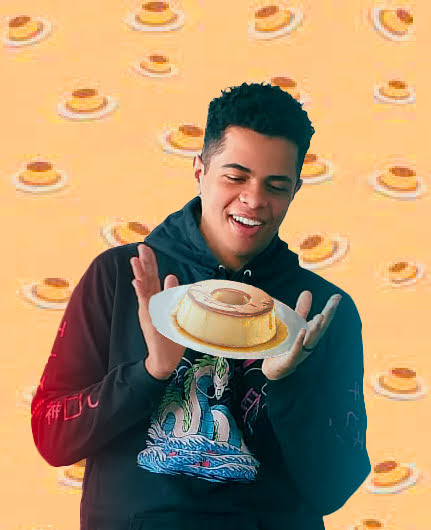

Por que Pudim é tão bom ?
O pudim é uma sobremesa que conquista os paladares mais refinados com sua textura suave e sabor irresistível. Sua base cremosa, obtida através da combinação delicada de leite, ovos e açúcar, resulta em uma experiência gustativa única. A caramelização do açúcar que o reveste adiciona uma nota indulgente e levemente amarga, contrastando perfeitamente com a doçura do conjunto. O pudim, com sua simplicidade aparente, uma obra-prima da confeitaria, onde cada colherada é uma viagem sensorial. Sua consistência sedosa derrete na boca, deixando um rastro de prazer que perdura. O equilíbrio entre doçura e cremosidade faz do pudim uma escolha clássica e atemporal, elevando qualquer refeição a um patamar de deleite gastronômico. Em resumo, o pudim encanta não apenas pela sua doçura, mas pela harmonia de sabores e pela sofisticação que traz a cada porção.
Instagram GitHub 